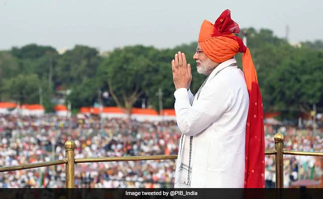
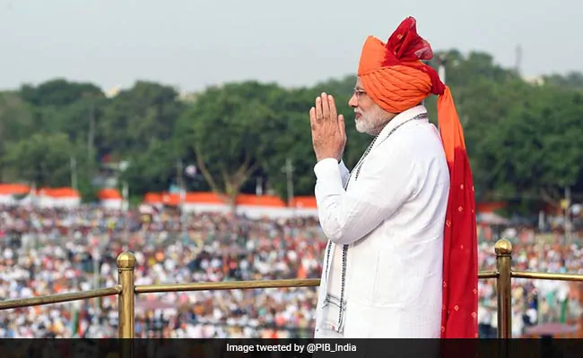

Independence Day Celebration

The Independence Day of India, which is celebrated religiously throughout the Country on the 15th of August every year, holds tremendous ground in the list of national days, since it reminds every Indian about the dawn of a new beginning, the beginning of an era of deliverance from the clutches of British colonialism of more than 200 years. It was on 15th August 1947 that India was declared independent from British colonialism, and the reins of control were handed over to the leaders of the Country. India's gaining of independence was a tryst with destiny, as the struggle for freedom was a long and tiresome one, witnessing the sacrifices of many freedom fighters, who laid down their lives on the line.
What is the significance of 15th August in India
The republic of India gained its independence from the rule of the British on 15 August 1947. Since then, this date of 15 August is celebrated as the Independence Day in India to commemorate its freedom from the 200-year-old British government.
For India, 15 August is a day of her re-birth, a new start. At the midnight of 15 August 1947, the British rulers handed the country back to its Indian leaders, ending a remarkable struggle that lasted years. It was 15 August 1947, the historic date, on which sovereign India's first Prime Minister Pandit Jawaharlal Nehru unfolded the tricolour flag of the nation on the glorious Red Fort. The day is significant in the history of India as bringing an end to the British colonial rule in India.
History of 15th August
In 1757, after the British victory in the Battle of Plassey, the rule of East India Company started in India. By 1858, the British Crown had assumed control over India. The situation after World War I was marked with suppressive and exploitative laws by the British. This led to revolutionary calls for independence, and sparked the phase of non-violent and non-cooperation movements followed by civil disobedience.
The enduring leader and a national symbol for all these movements was Mohandas Karamchand Gandhi- the Father of the Nation. The next decades were marked with constant struggles between the Indians and the British for freedom. Many movements and acts were carried out by the Indian National Congress, freedom fighters and the people of India.
In the year 1946, the Labour government, the exchequer of Britain thought of ending their rule over India because of their exhaustion of capital post World War II. The British government announced, during the early 1947, that they intend to transfer power to the Indians by the month of June 1948. This approaching independence could not decrease the Hindu-Muslim violence in Bengal and Punjab. This led to Louis Mountbatten, the then Viceroy of India to propone the power hand-over date, owing to the fact that the unprepared British army could not cope with the increased violence in the country. In the month of June in 1947, the prominent Indian leaders like Pandit Jawaharlal Nehru, Mohammed Ali Jinnah, Abul Kalam Azad, Master Tara Singh and B. R. Ambedkar agreed for a partition of India along religious outline. The Sikh and Hindu areas were marked as India, while Muslim area as Pakistan.
Nehru's Speech on Independence Day
Jawaharlal Nehru, the first Prime Minister of independent India, was a man, who could influence the masses with his oration. He was an immensely learned man and could feel the pulse of the masses. Nehru's Message to the Nation on the Independence Day was delivered on the brink of midnight of the 14th of August, 1947.Jawaharlal Nehru, the first Prime Minister of independent India, was a man, who could influence the masses with his oration. He was an immensely learned man and could feel the pulse of the masses. Nehru's message to the nation on the Independence Day was delivered on the brink of midnight of the 14 August 1947. The speech focussed on various topics related to India and the freedom that she had achieved from the shackles of British colonial rule. The speech also encouraged and inspired the countrymen to wake from the long slumber and take steps for the upliftment and development of India.
 
